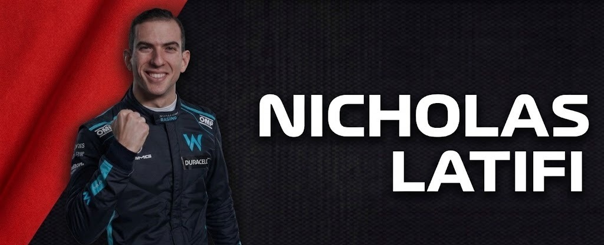
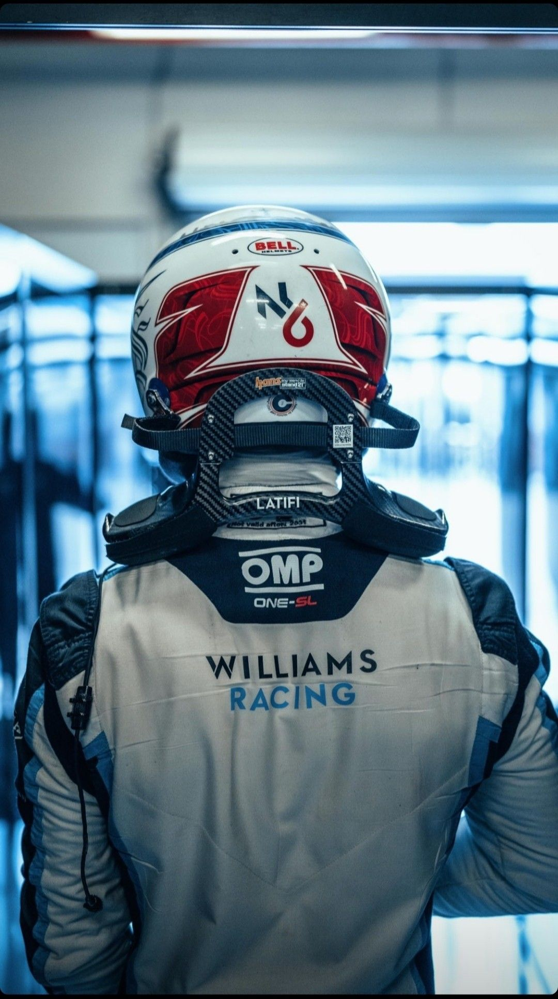

Nicholas Latifi
DRIVER PRESENTATION

Nicholas Latifi
Consistencia Táctica y Aporte Técnico de Nicholas Latifi en la Recuperación de Williams
Nicholas Latifi inició su carrera competitiva en el karting canadiense, consolidando su técnica a través de varias temporadas en la Fórmula 2 donde logró el subcampeonato en 2019. Su debut en Fórmula 1 en 2020 coincidió con un período de reestructuración profunda en Williams Racing. Durante la temporada 2021, Latifi demostró ser un piloto de gran fiabilidad, logrando sus primeros puntos en la categoría en el caótico GP de Hungría y manteniendo una consistencia notable en el ritmo de carrera. Su enfoque se ha centrado en el trabajo de puesta a punto y en proporcionar un feedback técnico detallado que ha sido crucial para la evolución del chasis Williams. Latifi representa la perseverancia y el trabajo en equipo, elementos esenciales para el progreso de una escudería en la competitiva zona media de la parrilla mundial.
MOMENTOS DESTACADOS

Primeros Puntos en F1
Hungría 2021: Latifi logra sus primeros puntos tras una carrera inteligente, cruzando la meta en el top 10.

Debut con Williams
2020: Su llegada a la máxima categoría, convirtiéndose en el único piloto canadiense en la parrilla en ese momento.
Feedback de Desarrollo
2021: Su aporte fundamental en el desarrollo del chasis, ayudando al equipo Williams a recuperar competitividad.